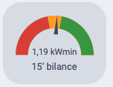
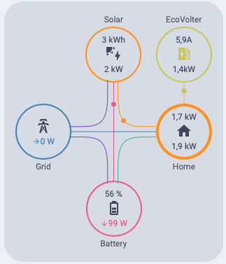

Adaptive BEV Charging with Home Assistant
Introduction
What’s the best companion to a photovoltaic station? Why, it is the Sun, of course! But then there are several contenders for the runner-up place, and the battery electric vehicle (BEV) is certainly among them. Depending on the prevailing regime of utilisation, a BEV can be more or less flexible as a heavy consumer of electricity. During the night, most vehicles stay in a garage or a parking lot and might thus be charged from the grid. However, if we want to feed a BEV from a PV station, the vehicle must be attached to a wallbox at home (or at PV-equipped work, for that matter) during the day, which may or may not be possible.
There are two basic BEV charging modes. First, one often wants to charge a BEV as fast as possible using maximum power provided by the wallbox, be it from the grid, PV station or combination thereof. This is essentially the only option for simpler wallboxes with no dynamic control of the charging power.
The other charging mode attempts to apply adaptive control of the charging power so as to utilise surplus photovoltaic production for BEV charging and minimise contributions from the grid. This blog post describes how I implemented this charging mode in Home Assistant. Although the sensors and control elements in this solution are specific to my PV station and wallbox, the algorithm can be easily adapted for other hardware.
The complete YAML configuration of sensors, automations and dashboard cards, as well as other technical details, can be obtained from GitHub.
Alternative solutions
Other approaches for achieving the same goal, namely charging a BEV primarily from excess PV power, do exist but may require a specific arrangement in the electric installation and/or additional hardware.
The simplest solution is to use a wallbox that is able to get the necessary data directly from the PV system and adjust the charging power accordingly. In an ideal world, it might work like this across different brands of PV systems and wallboxes via a standard protocol. In practice though, at least for now, only proprietary products are available. One example is Victron Energy’s Energy Storage System equipped with their wallbox.
If a PV system and a wallbox can’t talk directly to each other, one can still add a mediator device that takes care of the necessary communication and control. Examples of commercially available products that provide this functionality are
- DLM module offered by the wallbox manufacturer MyBox
- Solar Station.
For someone like me who already has both the PV system and the wallbox integrated in a home automation platform, it is most natural to implement the mediator function within that platform. The rest of this blog post describes how I did it in Home Assistant.
For the sake of completeness, I also want to mention a “poor man’s” method that is somewhat limited but should work with essentially any hardware and may sometimes actually be the only option. It requires placing a wallbox (or even a plain electric outlet) between the grid and the PV system. The wallbox is then able to consume excess PV energy that would otherwise be fed into the grid. This method, further explained by VideoPajaa(in Czech), has two limitations:
- It may be complicated to attach the wallbox to the main grid input cable before the PV inverter.
- If there isn’t enough PV power, the wallbox will pull the rest from the grid, unless we apply additional regulation of wallbox input power.
Wallbox control in Home Assistant
The goal of my adaptive control algorithm is to regulate the charging power of the wallbox so that it uses most of the surplus PV power available at a given moment but not more – we want to avoid, as much as possible, using energy both from the grid and our home battery. In order to achieve this, several prerequisites have to be met and a few things ought to be taken into account.
First of all, hardware parameters of the wallbox and the PV system determine the range of charging power in which we can exercise control. The standard IEC 61851-1 defines a baseline: the minimum charging current for AC wallboxes is 6 A, and the wallbox can signal the maximum available current to the vehicle in 1-A steps up to a limit that is typically 16 or 32 A.
On the other hand, the DC/AC inverter of the PV station is also restricted in terms of the output AC current. In my case (Victron Energy MultiPlus-II 3000 VA) the practical limit is around 10 A per phase. Any AC power consumption on a given phase beyond that limit is pulled from the grid.
And finally, although our PV station has nominally an installed power of 8.2 kWp, the real maximum is around 6.5 kW. This limits the current for three-phase charging to 9 A.
All in all, we can regulate the charging current between 6 A and 10 A for single-phase and 9 A for three-phase charging.
When choosing a wallbox for PV-powered charging, it is important to make sure that it can be configured for operating in the single-phase mode. According to the specs, my stationary wallbox MyBox Plus supports both single-phase and three-phase charging but – and this is where I was taken by surprise – it depends only on the type of the on-board charger in the vehicle and cannot be configured. If the car can be charged with three phases, the wallbox delivers power on three phases no matter what. This means that the minimum charging power of this wallbox is 3 × 6 A × 230 V / 1000 = 4,14 kW, which is something that our photovoltaic panels produce only around noon on a rather sunny day. That’s why I had to use another charger that I happened to have, namely the EcoVolter portable wallbox, where the number of charging phases can be configured.
When it comes to software and communication capabilities, a conditio sine qua non is, of course, the ability to monitor and dynamically regulate the status and power of the wallbox from Home Assistant. I use the following EcoVolter sensors and services for this:
sensor_ecovolter_charging_status- A categorical parameter that gives the current status of the wallbox based on the SAE J1772 standard. The common values are IDLE, CONNECTED and CHARGING.
sensor_ecovolter_target_current- The charging current in A.
binary_sensor.ecovolter_single_phase- This binary sensor is on for single-phase operation and off otherwise.
rest_command.set_target_current- Set the value of the target current.
rest_command.set_phases- Enforce single- or three-phase operation.
rest_command.enable_charging- Start/resume charging.
rest_command.disable_charging- Pause charging.
Finally, we need some information from the PV station about instantaneous production and other energy flows in the system. I use these sensors:
sensor.total_grid_power- Net power balance towards the grid. Positive values mean import from the grid and negative values export to the grid.
sensor.ess_battery_power- Power balance towards the home battery. Positive values mean charging and negative values discharging.
Control variables and thresholds
Next we have to define one or more control variables and corresponding thresholds for triggering changes in the charging power. There are a few options including
- state of charge of the home battery
- photovoltaic power
- surplus power, i.e. the difference between the PV power and consumption.
For my purposes, considering especially the variability of our household power consumption, I eventually chose the latter parameter. The surplus power can be implemented in Home Assistant as the following template sensor with entity ID sensor.pv_surplus_power:
templates.yaml
- name: "PV surplus power"
unique_id: "daa86894-3d82-4347-9401-d3ec32523fcd"
state: >-
{{ states('sensor.ess_battery_power') | int -
states('sensor.total_grid_power') | int }}
unit_of_measurement: "W"
device_class: power
state_class: measurementIts value is determined by subtracting the total grid power balance sensor.total_grid_power, where import is positive and export negative, from the power that is being sent to the home battery (sensor.ess_battery_power).
Now, it would be impractical to use the instantaneous value of the PV surplus power directly as the control variable because of its excessive sensitivity – it would cause reactions to momentary windows of solar radiation during an otherwise gloomy day or, conversely, to short-term increases in household consumption. What we need instead is a value averaged over a certain time interval.
The mean value of a continuous time-dependent variable \(x(t)\) over an interval between 0 and T is defined as the following integral:
\[ {1\over T} \int_{0}^T x(t)dt \]
We can create an Integral helper sensor, named in my case sensor.accumulated_pv_surplus_power, that approximates the integral of the PV surplus power sensor. In the GUI configuration of this helper I chose:
- Metric prefix: k (kilo)
- Time unit: Minutes
- Input sensor: sensor.pv_surplus_power
- Integration method: Trapezoidal rule
This configuration means that the units of the new integral sensor are kilowatt-minutes (kWmin).
But that’s not all – we also need to integrate only over a certain (relatively short) period of time in order to be able to react to changing circumstances in a timely manner. To this end, we created another type of helper sensor, namely the Utility Meter. Its entity ID is sensor.quarter_hourly_delta_of_surplus_pv_energy and the configuration parameters were set in the Home Assistant GUI as follows:
- Input sensor: sensor.accumulated_pv_surplus_power
- Meter reset cycle: Every 15 minutes
- Meter reset offset: 0
This sensor resets to zero every 15 minutes, so its value gives the PV surplus power integral accumulated within the current quarter of an hour. In order to obtain an approximation to the 15-minute mean value according to the above formula, we should divide the value of the utility meter by 15 minutes. This is however unnecessary, we can instead adjust the thresholds described next. For brevity, I will denote the value of this utility meter sensor as SSS (smoothed surplus sensor) and call it the “delta sensor”. Its unit is again kWmin.
The minimum charging current supported by the EcoVolter wallbox is 6 A (single phase), which means a power of 6 A ✕ 230 V / 1000 = 1.38 kW. Hence, if the wallbox is connected but idle, we want to start (or resume) charging whenever SSS reaches a value of 1.38 kW ✕ 15 min = 20.7 kWmin.
Similarly, an increase of the charging current by 1 A (still single phase) corresponds to a SSS value of 1 A ✕ 230 V ✕ 15 min / 1000 = 3.45 kWmin.
This way we can increase the charging current up to 10 A where we hit the limit of the DC/AC inverter. In order to use high PV power generated during a sunny day, we need to switch to three-phase charging. The transition from 10 A single phase to 6 A three phase means a difference in charging power of (3 ✕ 6 A - 10 A) ✕ 230 V / 1000 = 1.84 kW, or SSS value of 27.6 kWmin.
Finally, a difference of 1 A during three phase charging corresponds to a difference of 3 ✕ 3.45 kWmin = 10.35 kWmin.
In principle, we could determine the charging power warranted by the current value of the delta sensor and directly set wallbox parameters to the corresponding values. In practice, though, it is perfectly sufficient to increase or decrease the charging current gradually in 1 A steps. On the other hand, if we reach an SSS value threshold, we needn’t wait till the next quarter of an hour and can adjust the wallbox parameters right away.
Putting together the above considerations (and rounding the numeric results reasonably), we get control rules that are summarised in the following table:
| # | current [A] | phases | SSS [kWmin] | action |
|---|---|---|---|---|
| 1 | 0 | 21 | resume at 6 A single phase | |
| 2 | 6–9 | 1 | 3.5 | increase current by 1 A |
| 3 | 7–10 | 1 | -3.5 | decrease current by 1 A |
| 4 | 6 | 1 | -3.5 | pause charging |
| 5 | 10 | 1 | 28 | switch to 6 A three phases |
| 6 | 6–8 | 3 | 10.5 | increase current by 1 A |
| 7 | 7–9 | 3 | -10.5 | decrease current by 1 A |
| 8 | 6 | 3 | -10.5 | switch to 10 A single phase |
Automations
It is now pretty straightforward to translate the control rules from Table 1 to Home Assistant automations. For instance, the following automation realises rule #1:
automations.yaml
- id: "eb1e0025-22f7-4fb4-b15e-e0c39450dcde"
alias: "Resume BEV charging"
description: >-
Start/resume BEV charging if there is sufficient PV production
surplus and the cable is connected.
triggers:
- trigger: numeric_state
entity_id:
- sensor.quarter_hourly_delta_of_surplus_pv_energy
above: 21
conditions:
- condition: state
entity_id: device_tracker.ecovolter
state: home
- condition: state
entity_id: sensor.ecovolter_charging_status
state: CONNECTED
actions:
- action: rest_command.set_phases
data:
single: "true"
- action: rest_command.set_target_current
data:
value: 6
- action: rest_command.enable_charging
- action: utility_meter.reset
target:
entity_id: sensor.quarter_hourly_delta_of_surplus_pv_energy
mode: singleA few details in this automation are worth mentioning:
- After the charging is started, we reset the delta sensor so that it starts from scratch in the new situation. This happens after all changes of wallbox parameters as well as pausing/resuming the wallbox.
- EcoVolter’s device tracker is used to check that it is at home. I sometimes take the EcoVolter cable with me when travelling and it makes no sense to apply the control logic if it is used elsewhere.
YAML code for all the automations can be downloaded from GitHub.
Dashboard cards
I am always delighted to watch how things work as expected, especially those that I designed myself. That’s why I also created dashboard cards that show the value of the delta sensor together with the state of the adaptive control algorithm.
I use the Gauge card card for this purpose showing not only the value of the SSS but also the currently active lower and upper threshold that would trigger a control action according to Table 1. For single-phase charging and current less than 10 A, the card looks like in Figure 1 (a).
Another dashboard card that turned out to be very useful in this context is the Power Flow Card Plus, see Figure 1 (b).


In the configuration of a gauge card, the extents of red, yellow and green severity intervals, i.e. the thresholds for decreasing and increasing the charging power, have to be specified as a static number. We can make it dynamic by creating multiple instances of the card (four in this case) for each configuration of SSS threshold, and also use visibility conditions to make sure that one and only one instance is displayed at any time. For example, when single-phase charging with less than 10 A is on, the following gauge card instance is displayed:
type: gauge
entity: sensor.quarter_hourly_delta_of_surplus_pv_energy
name: 15’ bilance
unit: kWmin
min: -30
max: 30
needle: true
grid_options:
columns: 6
rows: 2
severity:
green: 3.5
yellow: -3.5
red: -30
visibility:
- condition: state
entity: sensor.ecovolter_charging_status
state: CHARGING
- condition: state
entity: binary_sensor.ecovolter_single_phase
state: "on"
- condition: numeric_state
entity: sensor.ecovolter_target_current
below: 10Practical experiences
I have been using the adaptive charging algorithm for more than two years and the experience so far has been very positive. The system is able to pause/resume charging and regulate the power and the number of phases according to changing conditions. It also has sufficient inertia and hysteresis so that it doesn’t immediately react to transient fluctuations in PV production and household power consumption. Such momentary peaks are usually nicely absorbed by the home battery.
On the other hand, if the PV production surplus (or, conversely, the deficit) is really large, the parameters converge to an equilibrium quite quickly because they are adjusted as soon as the delta sensor reaches the threshold so that several parameter updates are possible within a single quarter of an hour.
It is also good to know that the transitions between single-phase to three-phase charging and back require the charging session to be completely stopped and then resumed. This is necessary because the wallbox has to re-negotiate a new charging profile which can’t be done on the fly.
One situation where the algorithm fails to fully utilise (potential) PV production is when the home battery is almost full and excess production can’t be fed into the grid. In this case the PV production is artificially throttled, which has impact on the delta sensor – it’s value is lower than it could be. This usually happens if I start charging in the afternoon when the home battery is already full, but such a situation can also develop during a charging session.
There doesn’t seem to be any way (at least with Victron devices) for estimating the would-be PV power if it weren’t for the throttling, so I had to resort to trial and error: I have an automation that starts intensive charging (three phases at 7 A) whenever the state of charge of the home battery is over 90%. If this charging power is too high, the adaptive regulation will intervene and push the parameters back to an equilibrium at the expense of some energy from the home battery.